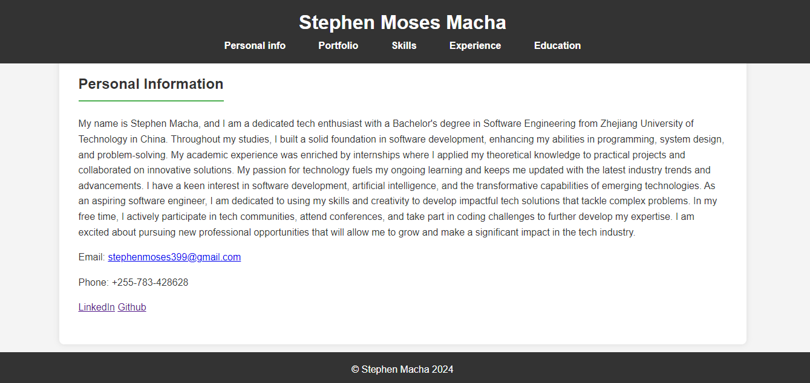

Personal Information
My name is Stephen Macha, and I am a dedicated tech enthusiast with a Bachelor's degree in Software Engineering from Zhejiang University of Technology in China. Throughout my studies, I built a solid foundation in software development, enhancing my abilities in programming, system design, and problem-solving. My academic experience was enriched by internships where I applied my theoretical knowledge to practical projects and collaborated on innovative solutions. My passion for technology fuels my ongoing learning and keeps me updated with the latest industry trends and advancements. I have a keen interest in software development, artificial intelligence, and the transformative capabilities of emerging technologies. As an aspiring software engineer, I am dedicated to using my skills and creativity to develop impactful tech solutions that tackle complex problems. In my free time, I actively participate in tech communities, attend conferences, and take part in coding challenges to further develop my expertise. I am excited about pursuing new professional opportunities that will allow me to grow and make a significant impact in the tech industry.
Email: stephenmoses399@gmail.com
Phone: +255-783-428628
Portfolio
Stephen Macha - Portfolio
Built a portfolio with showcasing my skills in Programming
Skills
Technical Skills
- HTML
- CSS
- JavaScript
- PHP
- Laravel
Non-Technical Skills
- Project Management
- Communication
Experience
Intern
Aggrey and Clifford Marketing Agency | 2020 - 2021
- Modified existing software systems to enhance performance and add new features.
- Analyzed solutions and coding fixes for software problems
- Designed user-friendly software interfaces to simplify overall management.
IT engineer
Vemma Consult Attorneys | 2023 - to date
- Identified problems in printers, scanners, and networking
- Tackled troubleshooting and problem resolution to support end user technical issues.
- Registering and maintenance of Trademarks Portfolios
Education
Postgraduate Diploma in Computer Science
University of Dodoma | 2021 - 2022
Bachelor’s Degree in Software Engineering
Zhejiang University of Technology | 2016 - 2020